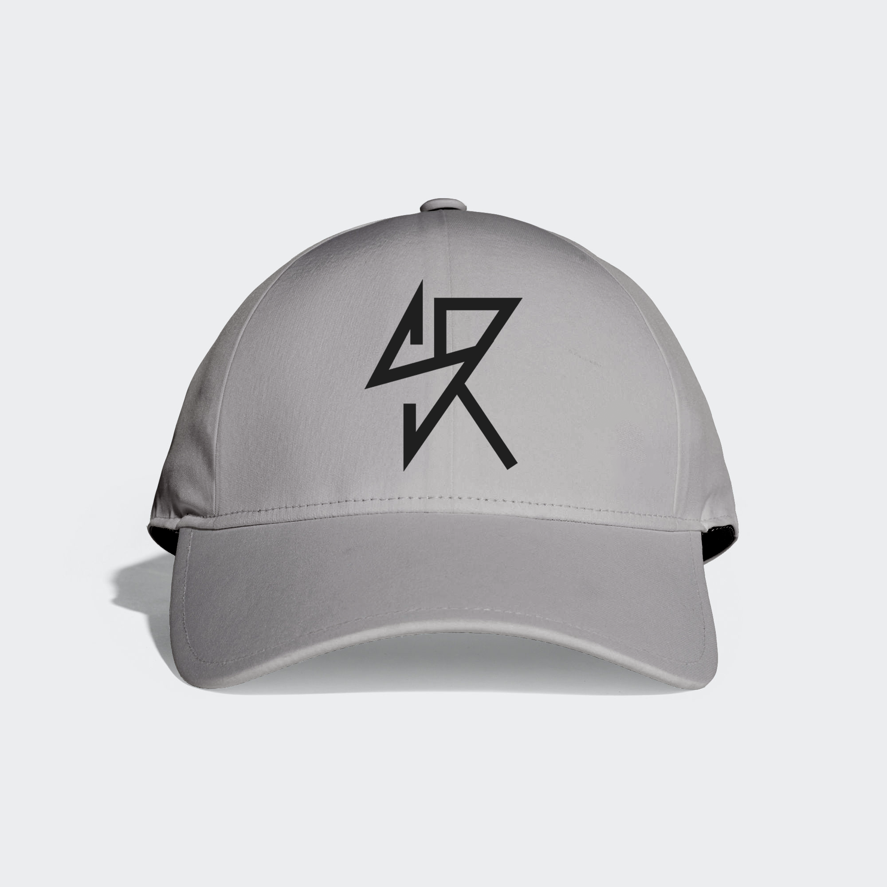

Galería

Poster callejero — Un poster fiel al estilo SAINT RAWK.

Camiseta — Esta pieza refleja el estilo sobrio que maneja la marca.

Poster callejero — Inspiración grunge con elementos oníricos.

Gorra Saint Rawk — Gorra con monograma aplicado.